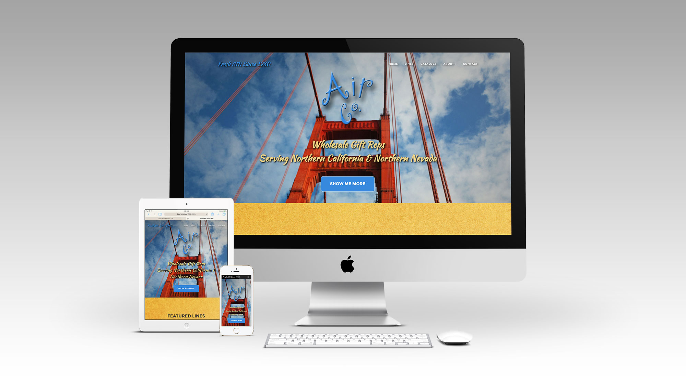
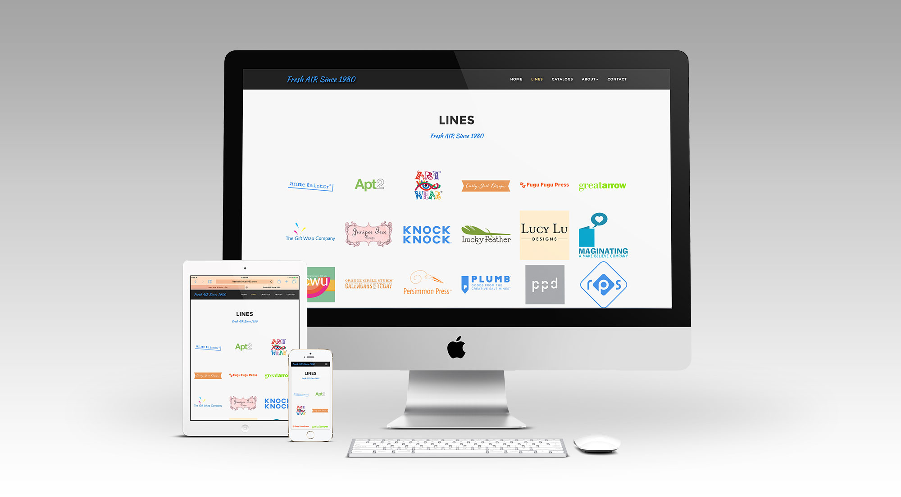
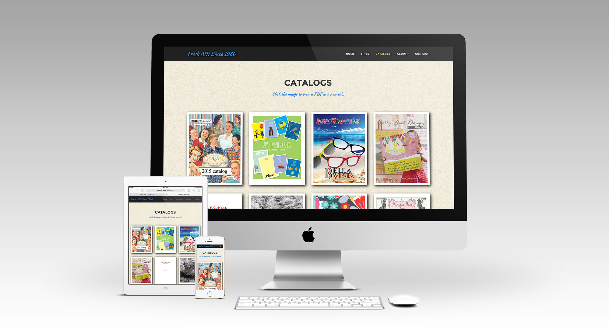
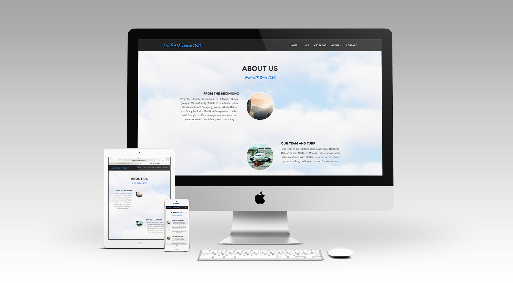
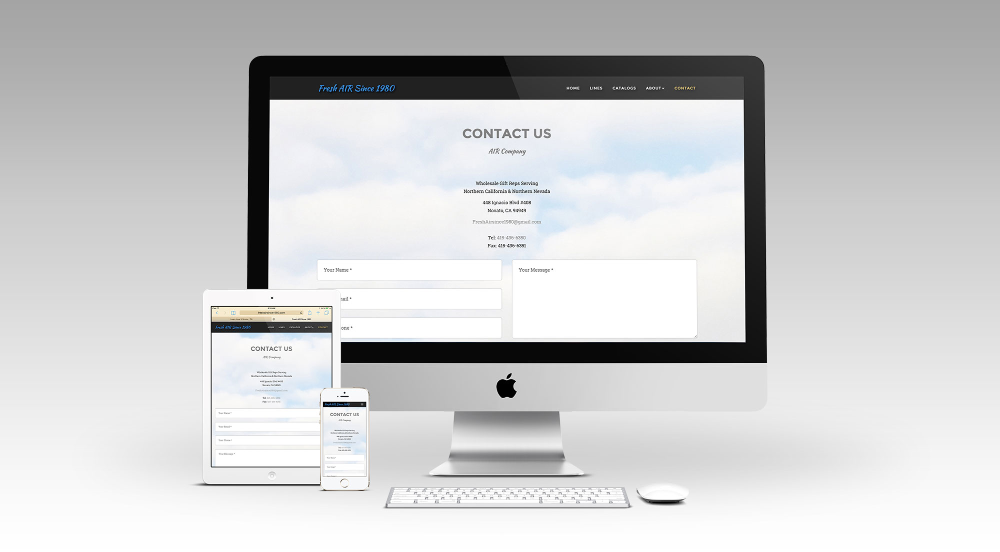

		<!-- START PROJECT -->
		<section id="project-page">
			<div class="container">
				<div class="row">
					<div class="col-md-12">
						<div class="flexslider">
						 	<ul class="slides">
						    	<li></li>
							    <li></li>
							    <li></li>
                                <li></li>
                                <li></li>
						  	</ul>
						</div><!-- END FLEXSLIDER -->
					</div><!-- END COLUMN 12 -->
					<div class="col-md-12 project-info">
						<h3 class="project-title">FreshAirSince1980.com</h3><br />
                        <h4 class="project-subtitle">Company Website</h4>
						<p>Air Co. is a distribution company that needed a site to provide their customers with company information and catalogs of the lines carried. This is a fully responsive bootstrapped site.</p>
                        <ul class="project-details">
							<li><span>Categories</span> web design - ui design - ux design</li>
                            <li><span>Company</span> Ancient Goose Network</li>
						</ul>
						<a href="http://freshairsince1980.com/" class="button-border-white">View Online</a>
					</div><!-- END COLUMN 12 -->		
				</div><!-- END ROW -->
			</div><!-- END CONTAINER -->
		</section>
		<!-- END PROJECT PAGE SECTION -->

